이클립스 내 JDK 버전 변경, JDK 1.8 버전 변경 에러
- 2021, 맥북 프로 M1 Pro 14인치 모델
- Ventura 13.1
JDK: openjdk version 1.8.0_352
Eclipse: Version: 2022-09 (4.25.0)
JDK 버전 변경 시 JDK 설치와 환경 변수 적용 등이 미리 되어 있어야 합니다.
JDK 설치 참조
이클립스 설치 참조
프로젝트 JDK 버전 확인
Properties -> ProjectFacets -> Convert to faceted form…
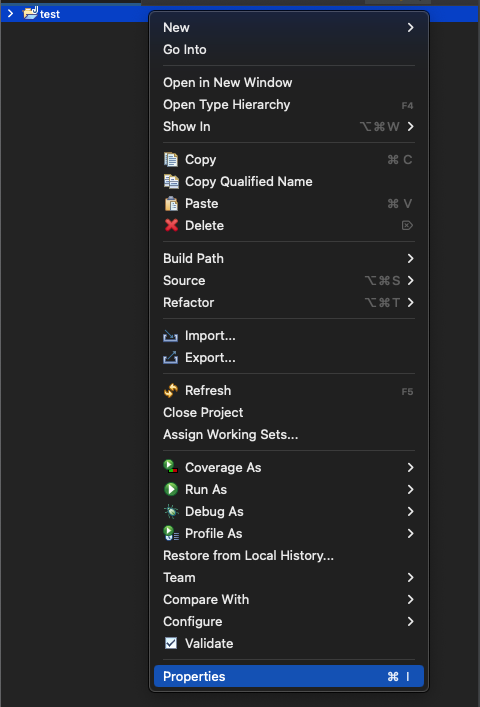
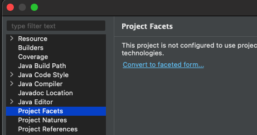

이클립스와 연결된 JRE (JDK) 버전 확인
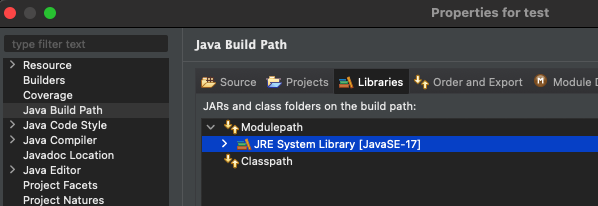
이클립스와 연결된 컴파일러 버전 확인
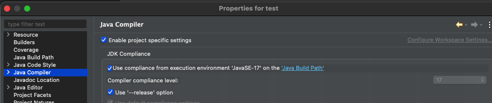
버전 변경
JDK 17 -> JDK 8 (1.8) 변경으로 가정해 보겠습니다.
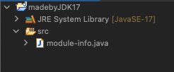
버전 변경할 프로젝트 Properties -> Project Facets -> Convert to faceted form…
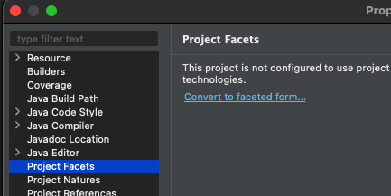
17 -> 1.8 변경 후 Apply
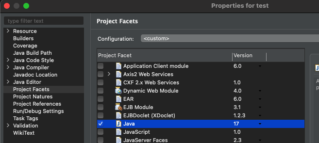
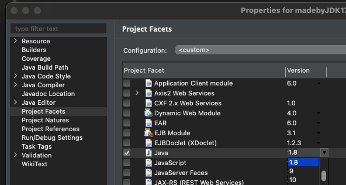
Java Build Path -> JavaSE - 17 더블클릭 -> JDK1.8 변경 후 Finish -> Apply

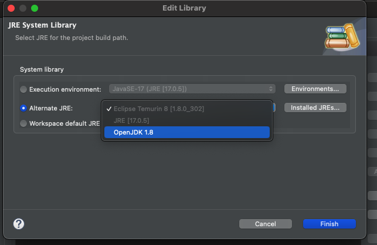
Java Compiler -> 17 -> 1.8로 변경 및 Apply
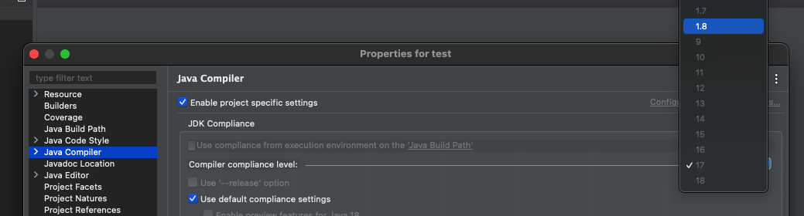
module error
통상 많이 쓰이는 1.8 버전으로 변경할 경우
그전 프로젝트가 JDK 9버전 이상의 버전으로 작성되었다면 JDK 9버전부터는 모듈이라는 기능 및 파일 (module-info.java) 추가됩니다.
그렇기 때문에
JDK 1.8 버전에는 모듈 기능이 없으므로
Syntax error on token “module”, module expected” error가 발생합니다.
하여, module.info.java를 제거해 줘야 에러가 발생하지 않습니다.
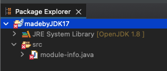
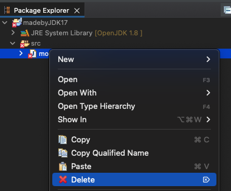
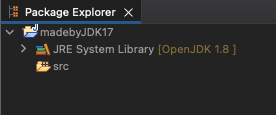